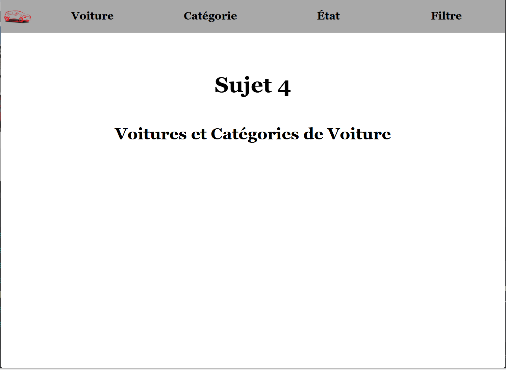
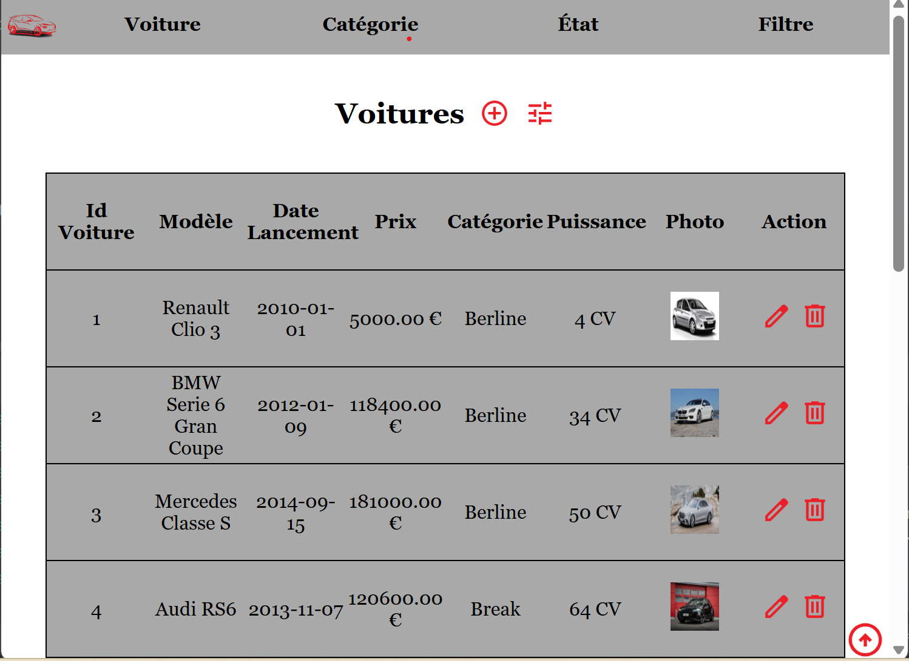
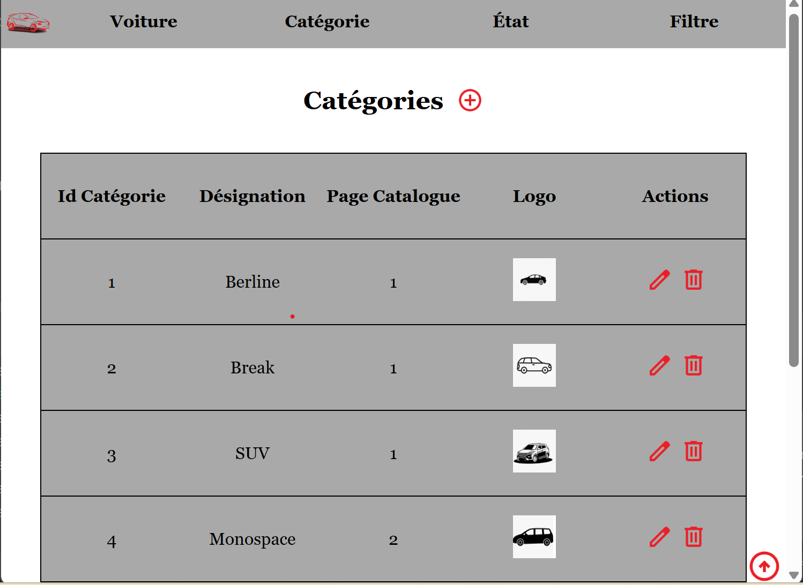
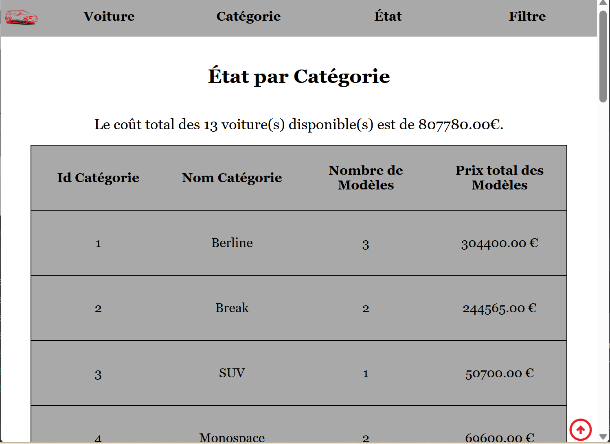

Catalogue de Voitures

Ce projet étudiant a pour objectif de mettre en place un site en utilisant un framework (ici
Flask) afin de lier une base de données (MySQL) à une interface web (HTML,
CSS). Ce site peut être comparé à un catalogue simplifié de voitures. La base de données
comporte deux tables : une table Voiture qui comporte les informations des véhicules et une
table Catégorie qui recense les différentes catégories de voitures.

Le site présente une page Voiture qui recense toutes les voitures présentes dans la base de
données. Celles-ci sont accompagnées de plusieurs informations supplémentaires : l’id
(numéro d'identification), le nom, la date de lancement, le
prix, la puissance, la photo ainsi que la catégorie associée à la
voiture.
À l'aide du bouton +, on peut ajouter un nouveau véhicule avec les différentes informations
citées plus haut. On peut aussi modifier un véhicule grâce au crayon. Enfin,
grâce à la poubelle, il est possible de supprimer un véhicule ; un message de confirmation
apparaît alors.

Le site présente une page Catégorie, semblable à la page Voiture, qui recense toutes les catégories
de voitures présentes dans la base de
données. Celles-ci sont accompagnées de plusieurs informations supplémentaires : l’id
(numéro d'identification), la désignation, le numéro de page du catalogue associé et
le
logo associé à la catégorie de voiture.
Tout comme la page Voiture, à l'aide du bouton +, on peut ajouter une nouvelle catégorie avec
les différentes informations
citées plus haut. On peut aussi modifier une catégorie grâce au crayon.
Enfin,
grâce à la poubelle, il est possible de supprimer une catégorie de voiture. Or, lors de la
suppression d'une catégorie, tous les véhicules associés disparaîtront aussi. Un message de
confirmation apparaît alors avec toutes les voitures comprises dans celle-ci.

Ensuite, le site comporte une page État qui affiche différentes statistiques sur la base de
données. Ces informations représentent les catégories et les voitures, et les classent en fonction
des
prix, puissances, prix du cheval, etc.

Enfin, un filtre est présent avec différentes possibilités de recherche : par nom du modèle, en
choisissant la/les catégorie(s) souhaitée(s) et par prix du véhicule. Toutes ces recherches se
cumulent entre elles. De plus, le site utilise des cookies pour se souvenir du filtre.
Ainsi, si l'on change de page et revient, le filtre réapparaîtra comme laissé.
Ce projet m'a permis d'apprendre comment lier et faire interagir une base de
données
avec un site web.